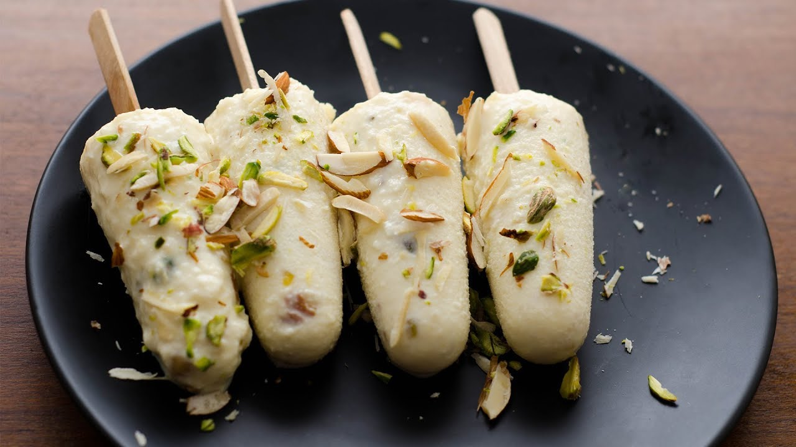

Malai Khulfi Recipe

Description
Kulfi is best described as Indian-style ice cream. However, unlike ice cream, kulfi is not churned. This is a fantastic summer dessert. This is a quick and easy version of kulfi. I almost never make kulfi the old way any more.
Ingredients
- 2 cups whole milk, ½ cup condensed milk
- ¼ cup dry milk powder, 2 teaspoons white sugar, or to taste
- ½ teaspoon ground cardamom, 1 pinch saffron threads
Preparation Steps
- Stir the milk, condensed milk, and dry milk powder together in a heavy-bottomed pan and bring to a boil. Add the sugar, cardamom, and saffron to the boiling milk; reduce heat to low and simmer, stirring frequently, for 10 minutes.
- Remove from heat and allow to cool to room temperature; fold the pistachio nuts into the mixture.
- Pour the mixture into popsicle molds and freeze until solid, about 1 hour
Back to Home